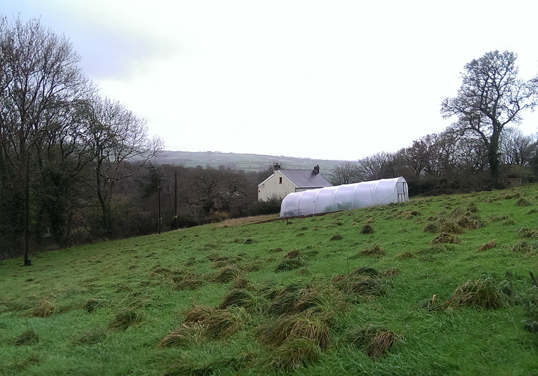
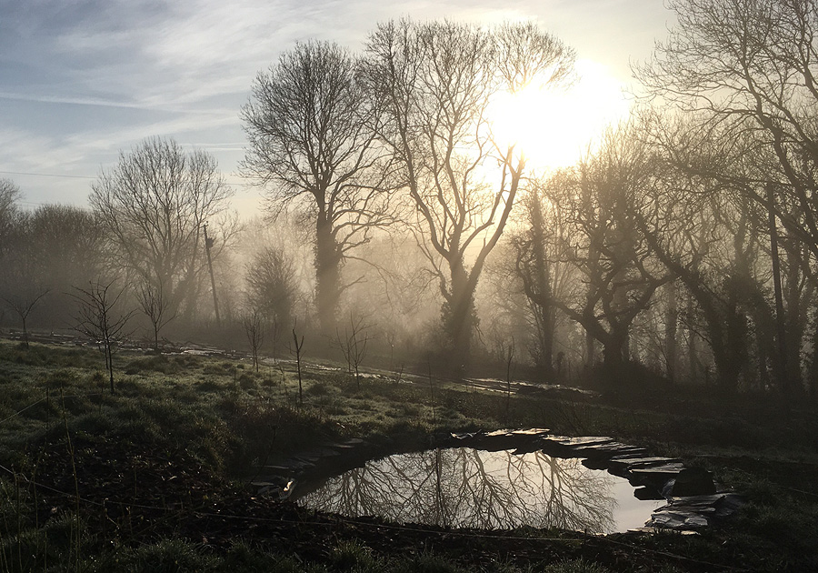
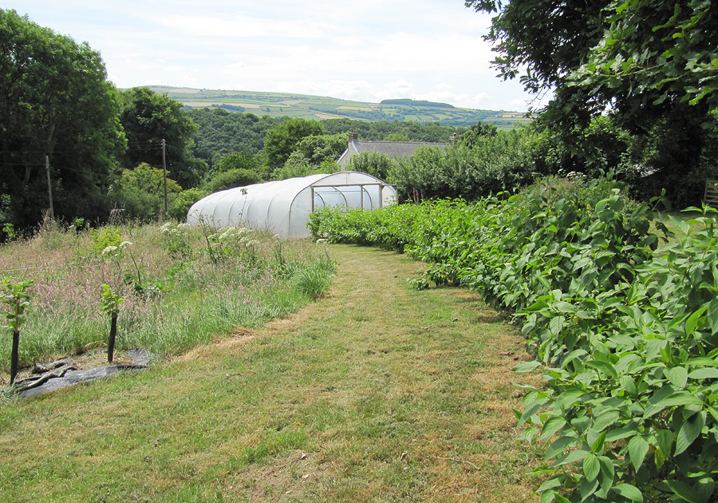
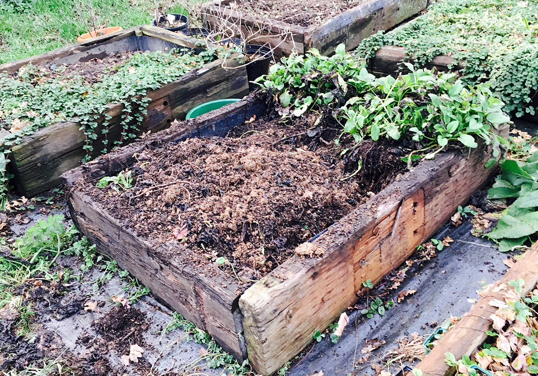
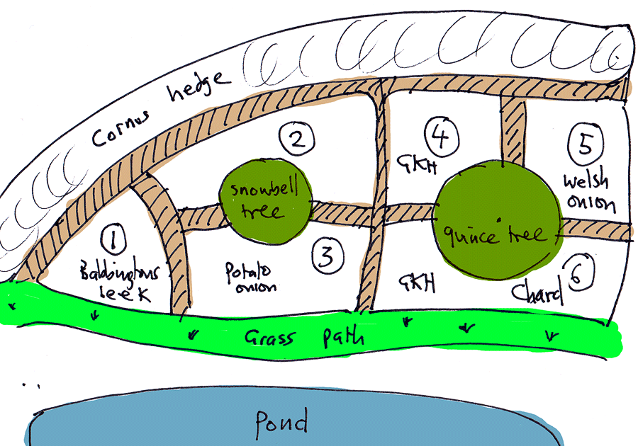
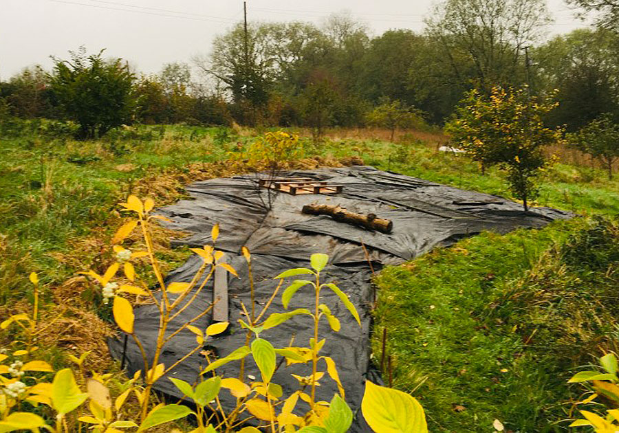
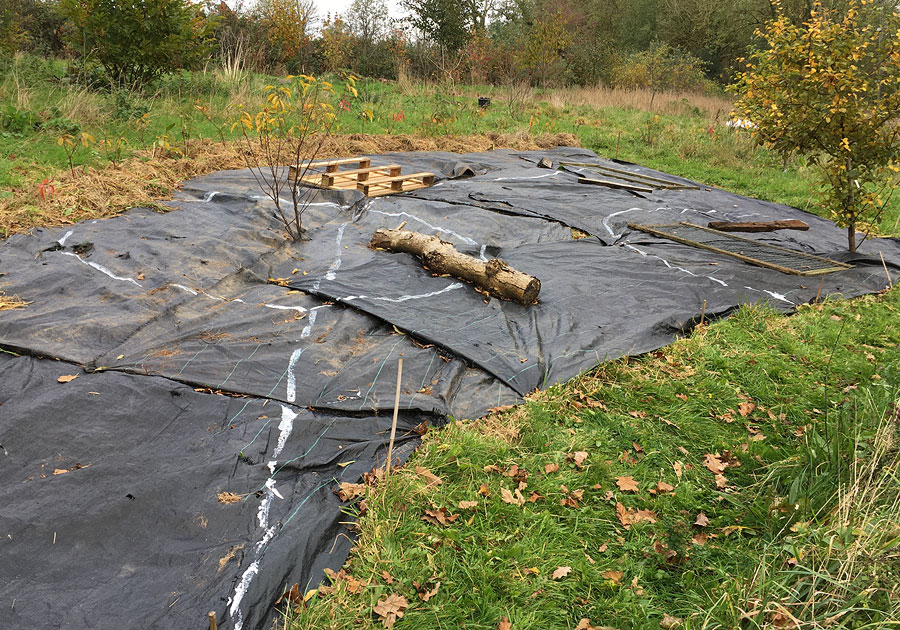
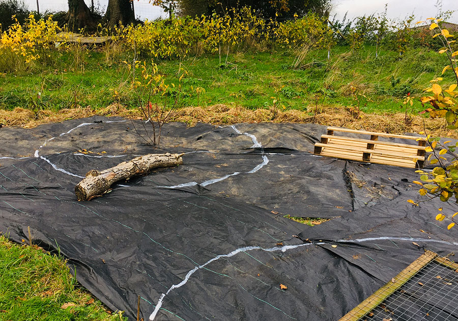
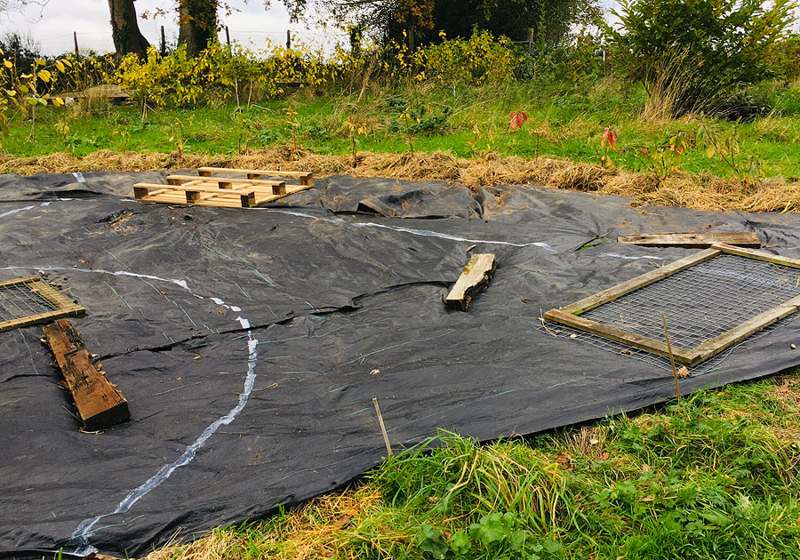
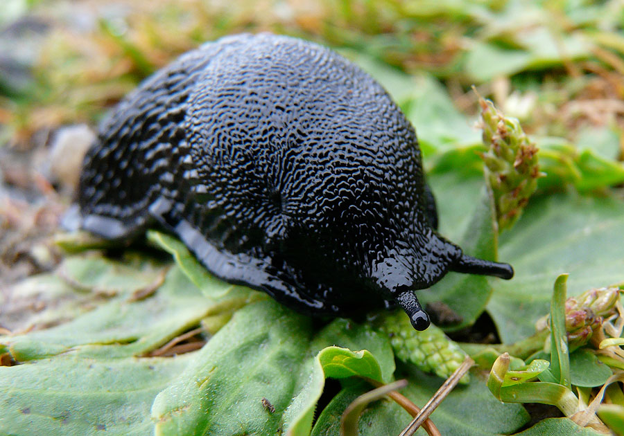

class: center, middle # Forest garden vegetables ü•¶ _Lessons learned from perennial veg_ ü•¶ [](/) by Jake Rayson **U3A Newcastle Emlyn** _Wednesday 6 November 2019_ [@NatureWorksGdn](https://twitter.com/NatureWorksGdn) [www.forestgarden.wales/talks/veg](https://www.forestgarden.wales/talks/veg/) ##### Press `P` to see notes and credits ??? This work is licensed under a [Creative Commons Attribution 4.0 International License](http://creativecommons.org/licenses/by/4.0/), embedded work may have other licenses. --- class: center, middle # Forest garden vegetables ### ü•¶ _Lessons learned from perennial veg_ ü•¶  --- # Three promises first 1. Grow a new perennial vegetable 2. Cultivate a native wildflower 3. Consider the [Green New Deal](https://greennewdealgroup.org)  ??? ## Me 1. Turn up on time 2. Make sure all the technology works 1. Deliver entertaining, informative & positive talk Photo by me, Earthsmoke or Fumitory --- class: center # A talk of three thirds ###_1. What is a forest garden?_### ###_2. Perennial veg guidelines_### ###_3. Top 10 perennial vegetables_### --- class: center # Three is a Magic Number [](https://www.youtube.com/watch?v=Bx8_cg9OvbM) --- class: center # A talk of three thirds ###_**1. What is a forest garden?**_### ###_2. Perennial veg guidelines_### ###_3. Top 10 perennial vegetables_### --- # What is a forest garden? ### Multi-layered perennials,<br>emulating edge of woodland,<br>working with nature to grow edible crops ### Wild life everywhere<br>balanced with appropriate plants  ??? ## History * _Cool Temperate_ forest gardening * Robert Hart, [Forest Gardening](https://en.wikipedia.org/wiki/Robert_Hart_(horticulturist)) * [Martin Crawford](), [Creating a Forest Garden](https://www.agroforestry.co.uk/product/creating-a-forest-garden-2/) --- # Forest garden principles 1. Productive 2. Sustainable 3. Low maintenance  --- # Forest garden principles 1. **Productive** 2. Sustainable 3. Low maintenance  --- # 1. Productive * Fruit, nuts, leaves, shoots, roots‚Ķ * Herbs, wood, canes, dyes etc * [Multi-layered](https://www.forestgarden.wales/blog/seven-layers-forest-garden/)  ??? * Using all space --- # Forest garden principles 1. Productive 2. **Sustainable** 3. Low maintenance  --- # 2. Sustainable * Mineral accumulators & nitrogen fixers * Wildlife predators for pests * Permanent ‚Äúliving mulch‚Äù ground cover * Trees, perennials & soil biota sequester carbon. * Biodiversity encouraged  --- # Forest garden principles 1. Productive 2. Sustainable 3. **Low maintenance**  --- # 3. Low maintenance * Minimal weeding * No watering * No digging * No fertilisers or compost  ??? * Resilient, in range, number species & perennials --- class: center, middle # From yards to acres  ---  ---  ---  --- <img class="full-screen" src="img/mulch-72CF5263.jpg" alt="Raised veg beds"> ---  --- <img class="full-screen" src="img/view-42802795151.jpg" alt="View over valley past polytunnel"> --- class: center # A talk of three thirds ###_1. What is a forest garden?_### ###_**2. Perennial veg guidelines**_### ###_3. Top 10 perennial vegetables_### --- # Why perennial? * Lower maintenance * Soil health & wildlife * More nutritious * [Vegetables for the Venerable](https://backyardlarder.co.uk/2018/11/vegetables-for-the-venerable/)  ??? * It doesn‚Äôt have to scale at homes * Annuals constant work: sowing, planting out, weeding, watering‚Ķ * Planting 4,000 leeks * Backyard Larder articles * [Vegetables for the Venerable](https://backyardlarder.co.uk/2018/11/vegetables-for-the-venerable/) * [Update 1: Vegetables for the Venerable](https://backyardlarder.co.uk/2019/02/vegetables-venerable-update/) * [Update 2: Vegetables for the Venerable](https://backyardlarder.co.uk/2019/06/vegetables-venerable-update-2/) --- # Perennial veg guidelines 1. Accessibility 2. Attention 3. Protection  --- # 1. Accessibility * Paths * Signage * Close to kitchen * Access to knowledge  ??? * Access for predators & pollinators --- class: center # People paths<br>lead to<br>attention  ??? Accessibility issues: * Close to kitchen - design --- class: center # Good signage<br>is easier<br>for everyone  ---  ??? 1. **Accessibility** 2. Attention 3. Protection ---  ??? 1. **Accessibility** 2. Attention 3. Protection ---  ??? 1. **Accessibility** 2. Attention 3. Protection ---  ??? 1. **Accessibility** 2. Attention 3. Protection ---  ??? 1. **Accessibility** 2. Attention 3. Protection --- # Access to knowledge * [Alison Tindale](https://twitter.com/BackyardLarder) at [Backyard Larder](https://backyardlarder.co.uk) * [Stephen Barstow](https://twitter.com/s_barstow) at [Edimentals](http://www.edimentals.com/blog/) * [Mandy Barber](https://twitter.com/IncredibleVeg) at [Incredible Vegetables](https://www.incrediblevegetables.co.uk) * [How to Grow Perennial Vegetables](https://www.agroforestry.co.uk/product/perennial-vegetables/) by Martin Crawford * [Perennial alternatives to annual vegetables](https://www.forestgarden.wales/blog/perennial-vegetable-alternatives/) by me  ??? 1. **Accessibility** 2. Attention 3. Protection --- # 2. Attention * Paths & signage! * Will always need to weed üôÇ * What grows naturally? * Shady forest garden  ??? 1. Accessibility 2. **Attention** 3. Protection --- # 3. Protection * Slugs! Weed! * Wind * Netting, pigeons * Early competition  ??? 1. Accessibility 2. Attention 3. **Protection** ---  ??? 1. Accessibility 2. Attention 3. **Protection** * Photo 'The Most Important Slug In The World, Part III: To Dungeons Deep' by Benjamin Dobson [on Flickr](https://www.flickr.com/photos/systemaabstra/6603403827/ ) --- # Wind * Windbreaks * Nurse trees * [Dead hedge](https://www.forestgarden.wales/blog/dead-hedging-forest-garden/)  ??? 1. Accessibility 2. Attention 3. **Protection** --- class: center, middle # Treat like annuals<br>until perennial Compost ‚Ä¢ Mulch ‚Ä¢ Weed  ??? 1. Accessibility 2. Attention 3. **Protection** --- #¬†My hot compost technique üî• * 3 beds, sides optional * 50/50 green & brown, chopped * Plastic keeps moisture in * Turn twice weekly üò∞  ??? 1. Accessibility 2. Attention 3. **Protection** Big thank you to Adam and Lesley at [Glebelands Market Garden](http://glebelandsmarketgarden.co.uk) for the experience & knowledge! --- # No-dig * [Ruth Stout](https://en.wikipedia.org/wiki/Ruth_Stout) US pioneer with straw * [Charles Dowding](https://charlesdowding.co.uk) UK advocate * Use **compost** mulch * Apply 1" in winter  ??? 1. Accessibility 2. Attention 3. **Protection** * [The Ruth Stout No-Work Garden Book](https://www.goodreads.com/book/show/165688.The_Ruth_Stout_No_Work_Garden_Book) * [No Dig Organic Home & Garden](https://charlesdowding.co.uk/product/no-dig-organic-home-garden/) by Charles Dowding & Stephanie Hafferty --- class: center # A talk of three thirds ###_1. What is a forest garden?_### ###_2. Perennial veg guidelines_### ###_**3. Top 10 perennial vegetables**_### --- # Plants For A Future * [PFAF.org](https://pfaf.org/user/Default.aspx) * Invaluable resource for forest garden & perennial veg * Donate [‚ÄòPlants to Save the Planet‚Äô Project](https://pfaf.org/user/cmspage.aspx?pageid=313)  --- # Top 10 Perennial Veg 1. [Caucasian Spinach](https://pfaf.org/user/Plant.aspx?LatinName=Hablitzia+tamnoides) 2. [Day Lillies](https://pfaf.org/user/cmspage.aspx?pageid=63) 3. [Welsh Onion](https://pfaf.org/user/plant.aspx?LatinName=Allium+cepa) 4. [Garden Sorrel](https://pfaf.org/user/plant.aspx?LatinName=Rumex+acetosa) 5. [Good King Henry](https://pfaf.org/user/plant.aspx?latinname=Chenopodium+bonus-henricus) 6. [Perennial Kale](https://pfaf.org/user/Plant.aspx?LatinName=Brassica+oleracea+ramosa) 7. [Perennial Leek](https://pfaf.org/user/Plant.aspx?LatinName=Allium+ampeloprasum) 8. [Siberian Purslane](https://pfaf.org/user/plant.aspx?LatinName=Claytonia+sibirica) 9. [Turkish Rocket](https://pfaf.org/user/plant.aspx?latinname=Bunias+orientalis) 10. [Wild Garlic](https://pfaf.org/user/plant.aspx?LatinName=Allium+ursinum) ??? * [Sea Kale](https://pfaf.org/user/Plant.aspx?LatinName=Crambe+maritima) is good too * Photo 'Flowering sea kale' by UnconventionalEmma [on Flickr](https://www.flickr.com/photos/fluffymuppet/5643574744/) --- # 1. [Caucasian Spinach](https://pfaf.org/user/Plant.aspx?LatinName=Hablitzia+tamnoides) * Has its own [Facebook group](https://www.facebook.com/groups/hablitzia/)! * Herbaceous perennial * Vigorous climber, up to 3 metres * Moist soil, tolerates full shade  ??? * Photo 'Hablitzia tamnoides' by Daderot [on Wikipedia](https://en.wikipedia.org/wiki/Hablitzia#/media/File:Hablitzia_tamnoides_-_Copenhagen_Botanical_Garden_-_DSC07677.JPG) --- # 2. [Day Lillies](https://pfaf.org/user/cmspage.aspx?pageid=63) * No. of species, [huge range of colours](https://www.rhs.org.uk/Plants/Search-Results?form-mode=true&context=l%3Den%26q%3D%2523all%26sl%3DplantForm&query=hemerocallis) * Edible flowers & flower buds * Easy to grow * 60cm-90cm tall  ??? * Photo 'Daylily Ed Murray 2011' by jacki-dee [on Flickr](https://www.flickr.com/photos/werms/6021369095) --- # 3. [Welsh Onion](https://pfaf.org/user/plant.aspx?LatinName=Allium+cepa) * Use leaves as chives, bulb as spring onion * Flowering stalk hardens * Dies back in winter * [Everlasting Onion](https://pfaf.org/user/plant.aspx?LatinName=Allium+cepa) 'Perutile' fresh leaves all winter  ??? * Can get non-flowering cultivar * Photo 'Welsh onion Allium fistulosum' by Eric Toensmeier [on Flickr](https://www.flickr.com/photos/132177911@N05/17194564940/) --- # 4. [Garden Sorrel](https://pfaf.org/user/plant.aspx?LatinName=Rumex+acetosa) * Strong lemon flavour * Mix leaves in salad * Contains oxalic acid * Roots, flowers & seeds also edible  ??? * Photo by Burschik [on Wikipedia](https://en.wikipedia.org/wiki/Sorrel#/media/File:Rumex_acetosa_cultivar_01.jpg) * Non-flowering Garden Sorrel available --- # 5. [Good King Henry](https://pfaf.org/user/plant.aspx?latinname=Chenopodium+bonus-henricus) * Leaves spinach substitute * Edible flower shoots & seeds * Dies back in winter * Member of Sorghum family  ??? * Photo 'GKH Flower' by UnconventionalEmma [on Flickr](https://flickr.com/photos/fluffymuppet/7379010230/) * [Amaranth family](https://en.wikipedia.org/wiki/Amaranthaceae) includes beets & spinach * [Goosefoot genus](https://en.wikipedia.org/wiki/Chenopodium) includes Millet, quinoa, Fat Hen --- # 6. [Perennial Kale](https://pfaf.org/user/Plant.aspx?LatinName=Brassica+oleracea+ramosa) * Protect when young * Daubenton‚Äôs Kale, Taunton Deane, Portugese Kale * Can grow very tall! * Eat younger leaves, remove older leaves  ??? --- # 7. [Perennial Leek](https://pfaf.org/user/Plant.aspx?LatinName=Allium+ampeloprasum) * Cultivar of [Wild Leek](https://en.wikipedia.org/wiki/Allium_ampeloprasum) * 'St Victor x Oerprei' from [Backyard Larder](https://backyardlarder.co.uk/shop/perennial-leek-st-victor-x-oerprei/) * [Babington‚Äôs Leek](https://pfaf.org/user/Plant.aspx?LatinName=Allium+ampeloprasum+babingtonii) smaller & garlicky * Harvest thicker shanks, replant thinner  ??? * Photo 'Perennial Leek' by Alison Tindale [on Backyard Larder](https://backyardlarder.co.uk/shop/perennial-leek-st-victor-x-oerprei/) --- # 8. [Siberian Purslane](https://pfaf.org/user/plant.aspx?LatinName=Claytonia+sibirica) * Earthy tasting leaves, raw or cooked * Propagates well if happy * Makes a good ground cover * Tolerates full shade  ??? * Photo by Jake Rayson --- # 9. [Turkish Rocket](https://pfaf.org/user/plant.aspx?latinname=Bunias+orientalis) * Cook leaves * Flower buds broccoli substitute * Loved by slugs! * Grow from seed  ??? * Photo by Jake Rayson --- # 10. [Wild Garlic](https://pfaf.org/user/plant.aspx?LatinName=Allium+ursinum) * Rampant Ramsons in spring * Pungent smell, delicate flavour * Cook briefly * Good ground cover with [Alefoot](https://pfaf.org/user/Plant.aspx?LatinName=Glechoma+hederacea)  ??? * Photo 'Wild Garlic (Ramsons) flowering in woodland' by ukgardenphotos [on Flickr](https://www.flickr.com/photos/ukgardenphotos/16450748809/) * Can take over a plot --- class: center, middle # Forest garden vegetables ### ü•¶ _Is this the end of annual veg?_ üòâ ü•¶  --- # Appendix: reference * Website: [www.forestgarden.wales](https://www.forestgarden.wales) * Twitter: [@NatureWorksGdn](https://twitter.com/NatureWorksGdn) * [Martin Crawford](https://www.agroforestry.co.uk/): books, courses, plants * [Plants for a Future](http://www.pfaf.org/): massive database of useful plants * [Backyard Larder](https://www.orangepippin.com/apples): perennial veg blog & shop * [Edimentals](http://www.edimentals.com): immense log of edible * [A New Garden Ethic](https://www.newsociety.com/Books/N/A-New-Garden-Ethic): book by Benjamin Vogt